Prosjekt: Sjømat
Fra idé til rapport
I avdelingen "markedsinnsikt" i Norges sjømatråd, en interesseorganisajon for norsk sjømat, jobbet jeg hovedsakelig med å fremstille ulike rapporter om sjømatkonsum verden over. Her hadde vi tilgang til "verdens største sjømatdatabase", og én av rapportene jeg jobbet med heter "Fiskemarked" og utgis annethvert år. Her tok vi for oss ulike eksportmarkeder og analyserte eksport og konsum av sjømat i de enkelte markedene. Et marked jeg jobbet med var Japan, et av Norges viktigste eksportmarkeder på laks og makrell.
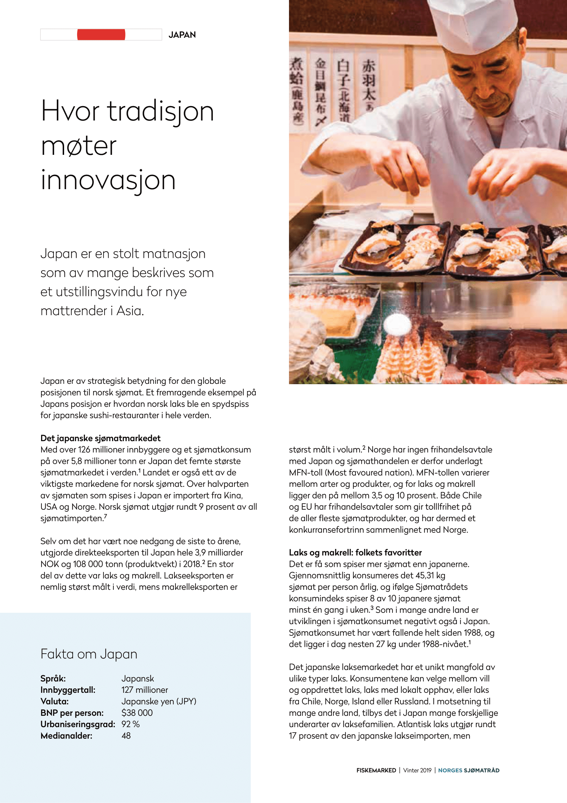 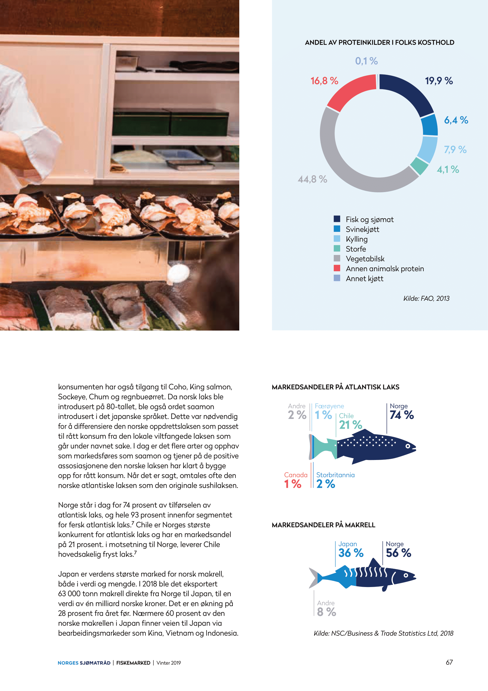Kundesegmentering
For å forstå mer av det japanske sjømatkonsumet, jobbet jeg også med en studie hvor vi delte opp markedet i ulike kundegrupper. Målet med denne studien var ikke bare å kartlegge konsumet, men også å kartlegge hvordan norske sjømateksportører kunne nå disse ulike kundegruppene. Via en japansk samarbeidspartner fikk vi tilgang til kvalitative og kvantitative forbrukerundersøkelser. Vi delte markedet så opp i sju ulike kundesegmenter, hvor av vi identifserte tre grupper som var interessante i henhold til vårt mål. Hos disse tre gruppene så vi nemlig et potensiale for økt eller høyt sjømatkonsum, og derfor gravde vi lenger ned i hvem dette var og hvordan de kunne nås.
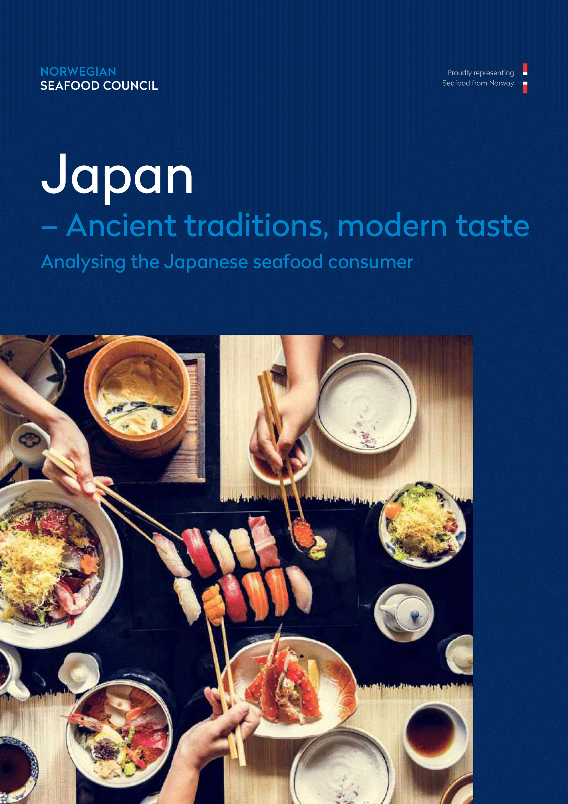 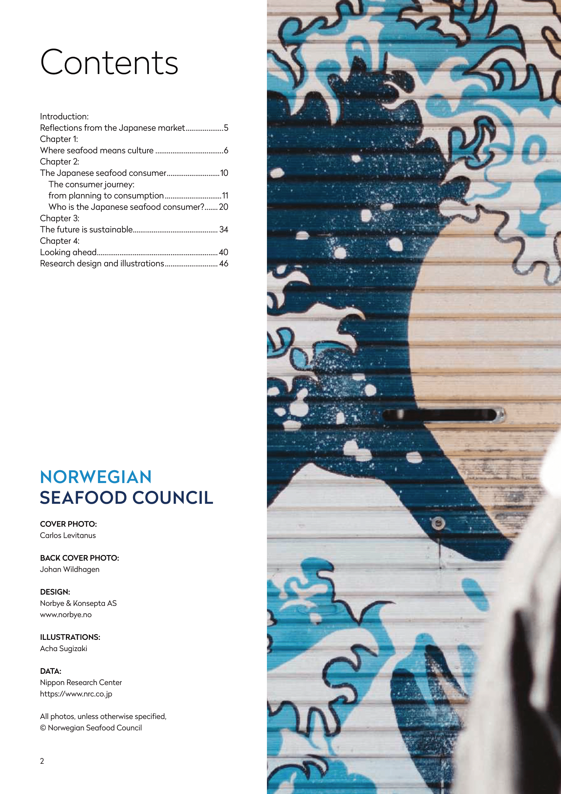 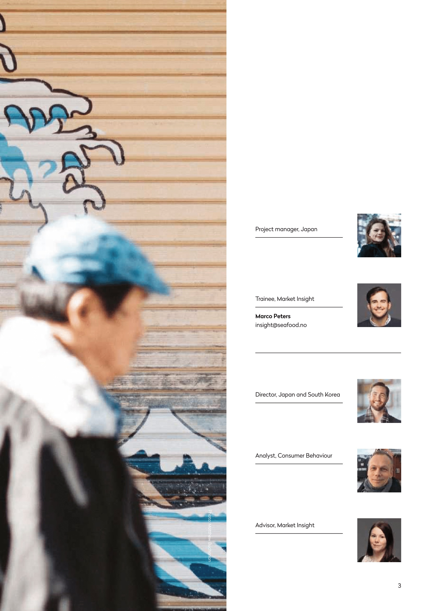 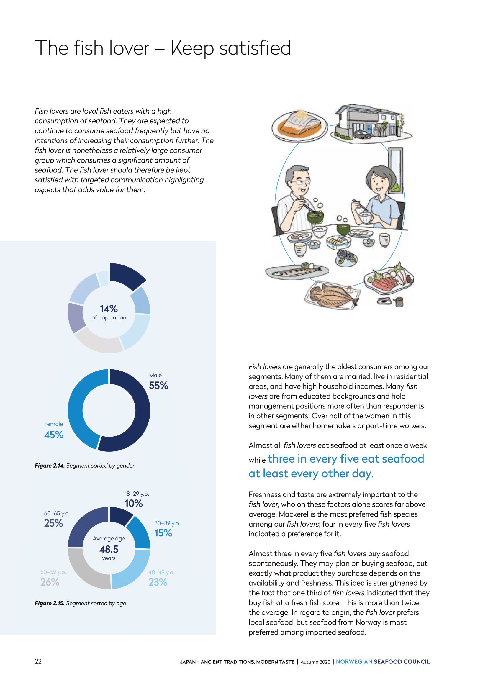 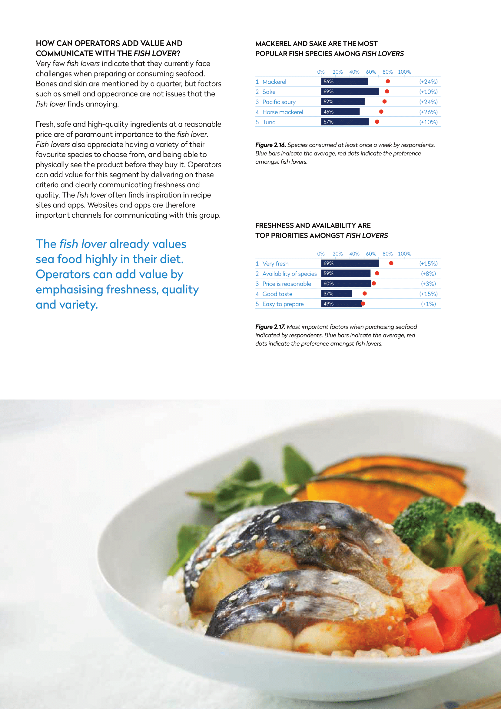 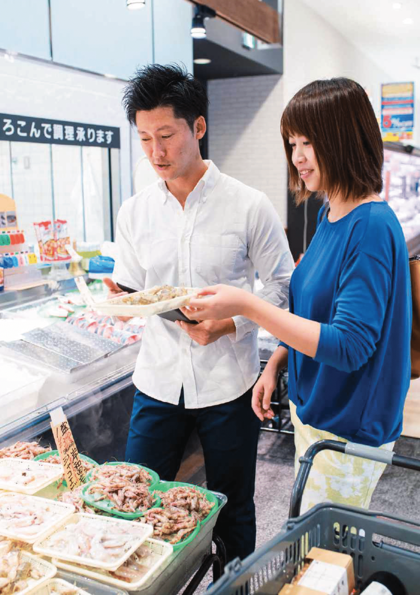The fish lover, eller fiskeelskeren identifiserte vi som konsumenter met et høyt og stabilt konsum av sjømat. Denne gruppen var ikke forventet å øke sitt sjømatkonsum, men som var forventet å opprettholde et konsum på et høyt nivå. Denne gruppen bestod av konsumenter med gjennomsnittlig høyest alder i studien, litt under 50 år, hvor av de fleste var gift og hadde høy inntekt. Fiskeelskeren tar seg tid og råd til å kjøpe sjømat på spesialbutikker og i ferskvaredisker. De er opptatt av å ha et stort utvalg av fersk sjømat av høy kvalitet, noe norske eksportører kunne spille inn på.
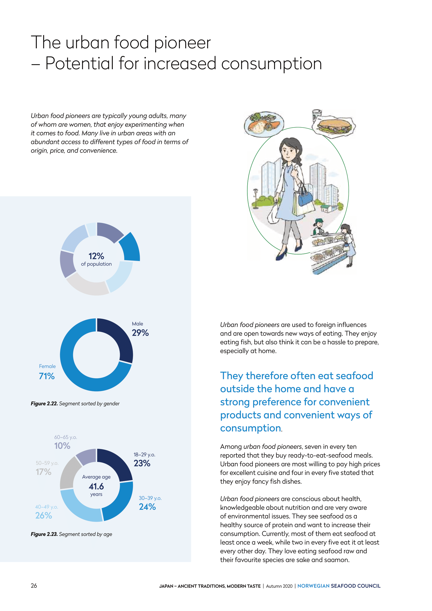 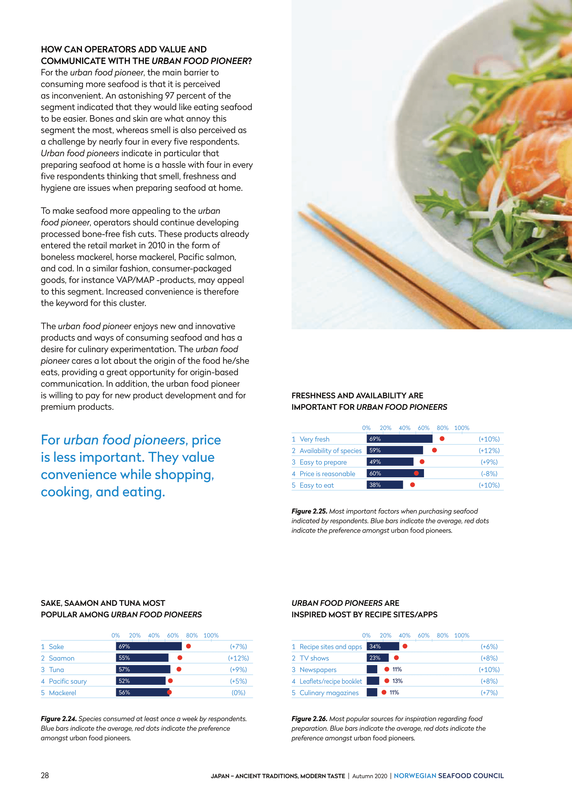The urban food pioneer, eller den urbane matpionéren, identifiserte vi som hovedsakelig unge og høyt udannede konsumenter som bor i byen og som er åpne for å prøve ut nye ting. En stor andel av denne gruppen er kvinner, hvor av flest er ugift og uten barn. Denne gruppen har god råd, spiser mye ute og er vant med å ha et stort tilbud av variert mat fra hele verden. De synes derimot at det er utfordrende å lage sjømat hjemme. Dette er interessant gruppe om man ønsker å introdusere nye produkter eller nye måter å tilberede sjømat på.
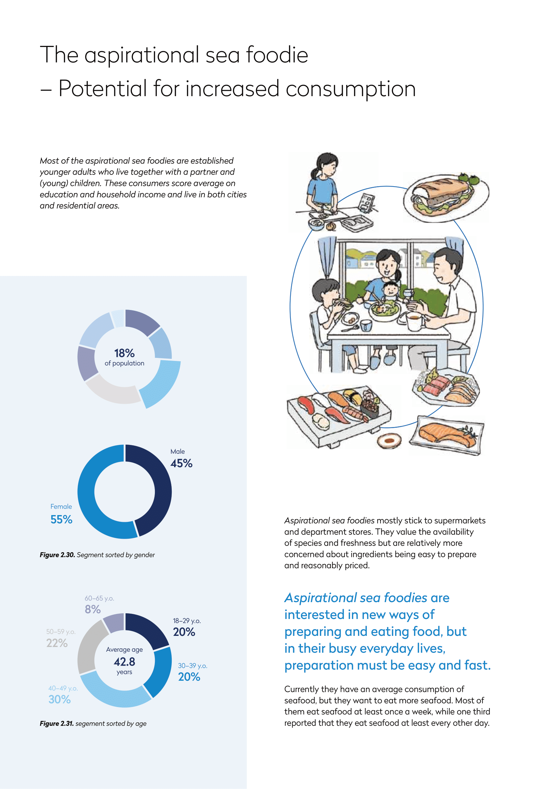 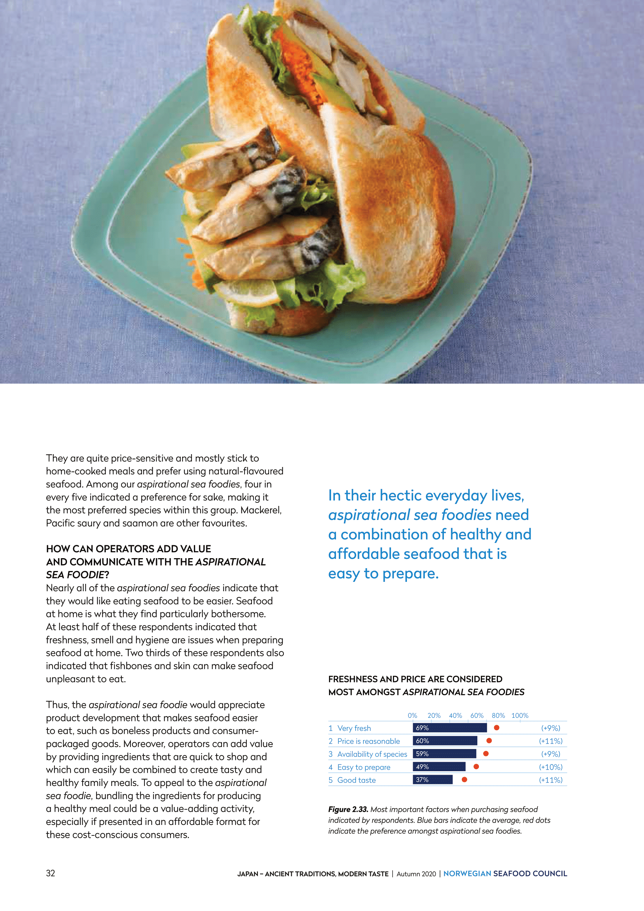 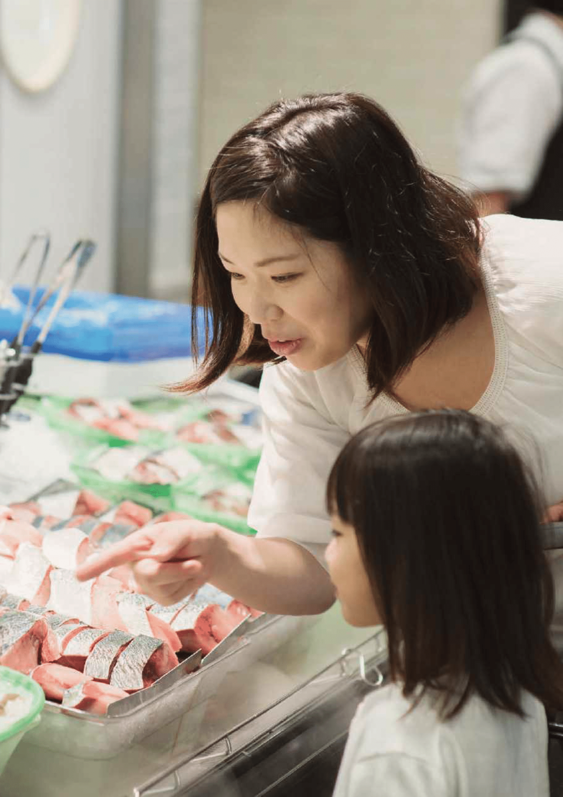The aspirational seafoodie, eller den ambisiøse sjømatspiseren, består hovedsakelig av unge voksne med barn. Denne gruppen scorer helt gjennomsnittlig på utdanning og inntekt og kjenntegnes av at de har en ambisjon om å spise mer sjømat. Denne gruppen handler hovedsakelig i dagligvarebutikken og er mer opptatt av pris og at maten skal være enkelt og raskt å lage. Dette er ting eksportører bør huske på om de ønsker å nå denne gruppen.